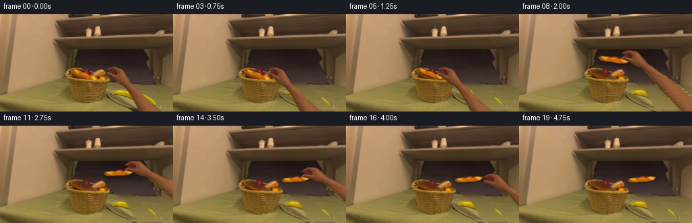
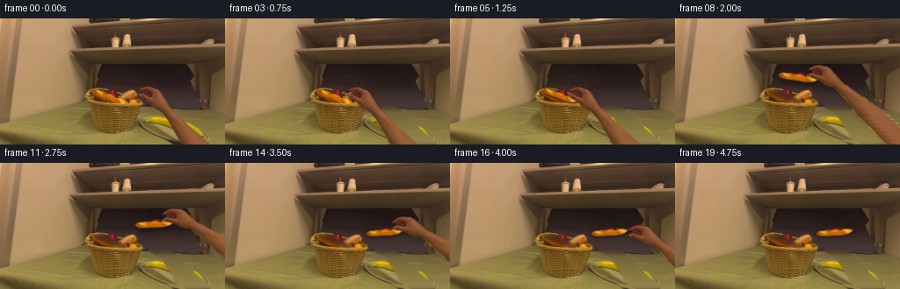
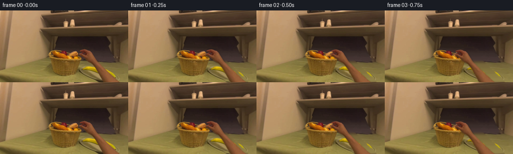

CODING AGENTS AS PIXEL WORLD MODELS
traex/GPT-6.1-Sol · common50_0018
点击播放 · 原生 RGB 像素
逐轮保存的候选
回放视频、检查图与代码变化。
每份候选均可单独播放。实际图片检查记录在下方工具轨迹中。
候选 01播放与检查图
点击播放 · 原生 RGB 像素

展开代码变化
--- 上一保存版本
+++ 本次保存版本
@@ -0,0 +1,169 @@
+from pathlib import Path
+import numpy as np
+from PIL import Image, ImageDraw, ImageFilter
+import artifact_io
+
+ROOT=Path(__file__).resolve().parent
+W,H=256,144
+S=3
+
+def polygon_mask(points, size=(W,H), scale=4):
+ im=Image.new('L',(size[0]*scale,size[1]*scale))
+ ImageDraw.Draw(im).polygon([(round(x*scale),round(y*scale)) for x,y in points],fill=255)
+ return np.asarray(im.resize(size,Image.Resampling.LANCZOS)).astype(np.float32)/255
+
+def smoothed_fill(a,mask,target,steps=220,screen=.08):
+ m=mask>.05
+ out=a.astype(np.float32).copy()
+ out[m]=target[m]
+ for _ in range(steps):
+ around=(np.roll(out,1,0)+np.roll(out,-1,0)+np.roll(out,1,1)+np.roll(out,-1,1))/4
+ out[m]=(around[m]+screen*target[m])/(1+screen)
+ return out
+
+class Layer:
+ def __init__(self,rgb,alpha):
+ self.alpha=Image.fromarray(np.uint8(np.clip(alpha*255,0,255))).resize((rgb.shape[1]*S,rgb.shape[0]*S),Image.Resampling.BICUBIC)
+ self.channels=[]
+ # Premultiplication makes transformed antialiased contours independent of the old background.
+ rgb=np.asarray(rgb).astype(float)
+ for k in range(3):
+ self.channels.append(Image.fromarray(np.uint8(np.clip(rgb[:,:,k]*alpha,0,255))).resize(self.alpha.size,Image.Resampling.BICUBIC))
+ def warp(self,pivot,position,angle=0,scale=1):
+ theta=np.deg2rad(angle)
+ c,s=np.cos(theta),np.sin(theta)
+ inv=np.array([[c,s],[-s,c]])/scale
+ offset=np.array(pivot)*S-inv@(np.array(position)*S)
+ coeff=(inv[0,0],inv[0,1],offset[0],inv[1,0],inv[1,1],offset[1])
+ size=(W*S,H*S)
+ a=self.alpha.transform(size,Image.Transform.AFFINE,coeff,Image.Resampling.BILINEAR)
+ rgb=np.stack([np.asarray(ch.transform(size,Image.Transform.AFFINE,coeff,Image.Resampling.BILINEAR),dtype=np.float32) for ch in self.channels],-1)
+ return rgb,np.asarray(a,dtype=np.float32)/255
+
+def over(bg, rgb, alpha):
+ return bg*(1-alpha[:,:,None])+rgb
+
+def cast_shadow(bg,alpha,amount,blur,offset):
+ im=Image.fromarray(np.uint8(np.clip(alpha*255,0,255)))
+ im=im.transform(im.size,Image.Transform.AFFINE,(1,0,-offset[0]*S,0,1,-offset[1]*S),Image.Resampling.BILINEAR)
+ sh=np.asarray(im.filter(ImageFilter.GaussianBlur(blur*S)),dtype=np.float32)/255
+ return bg*(1-amount*sh[:,:,None])
+
+def build_scene(image):
+ rng=np.random.default_rng(118)
+ a=np.asarray(image).astype(np.float32)
+ # Outer silhouette of the real right hand, including dark knuckle and finger creases.
+ left=[(164,78),(161,79),(159,80),(158.6,81),(159.5,82),(163,83),(162,84),(161,85),(157.5,86),(157,87),(157.5,88),(158.5,89),(159,90),(161,91),(163,92),(165,93),(166,94),(168,95),(169,96),(170,97),(171,98),(171.5,99),(173,100),(174,101),(176,102),(177,103),(179,104),(181.5,105),(183,106),(184,107),(185,108),(185.5,109),(186,110),(187,111),(188,112),(188.5,113),(189,114),(190,115),(191,116),(191,117),(192,118),(192,119),(193,120),(194,121),(194,122),(195,123),(195,124),(195,125),(197,126),(197,127),(198,128),(198,129),(199,130),(199,131),(200,132),(200,133),(201,134),(201,135),(202,136),(203,137),(203,138),(204,139),(204,140),(205,141),(206,142),(207,143)]
+ right=[(237,144),(237,142),(235,141),(234,140),(233,139),(231,138),(230,137),(229,136),(228,135),(228,134),(226,133),(225,132),(224,131),(223,130),(222,129),(220,128),(219,127),(219,126),(218,125),(217,124),(216,123),(215,122),(213,121),(212,120),(211,119),(210,118),(209,117),(208,116),(207,115),(206,114),(205,113),(204,112),(203,111),(202,110),(201,109),(201,108),(199,107),(199,106),(197,105),(196,104),(195,103),(194,102),(194,101),(193,100),(192,99),(192,98),(191,97),(191,96),(190,95),(189,94),(189,93),(188,92),(188,91),(187,90),(186,89),(186,88),(185,87),(185,86),(184,85),(183,84),(182,83),(181,82),(180,81),(177,80),(175,79),(172,78),(168,77.5)]
+ hand_poly=left+[(208,144)]+right
+ handmask=polygon_mask(hand_poly)
+ # The selected elongated loaf, not the shorter piece at the far side of the basket.
+ loaf_poly=[(105.5,82),(107.5,81),(110.5,81),(116,82.7),(121,84.2),(126.5,85.3),(131.5,87),(134,88.5),(135.8,90.3),(139.5,91.8),(143,94),(145,95.3),(144,96.8),(140.2,97.5),(135,97),(130,95.8),(125,93.8),(120,91.8),(115,89.7),(111,88.1),(108,86.7),(106.2,84.6)]
+ loafmask=polygon_mask(loaf_poly)
+ # Recover the plate's shaded surface from unoccluded pixels in the same scan line.
+ yy,xx=np.indices((H,W))
+ target=np.zeros_like(a)
+ for y in range(H):
+ if y<=100:
+ patch=a[y,200:214]
+ col=np.median(patch,axis=0)
+ row=np.repeat(col[None,:],W,axis=0)
+ row+=(200-np.arange(W))[:,None]*np.array([.024,.016,.009])[None,:]
+ elif y<=105:
+ col=np.median(a[y,230:245],axis=0)
+ row=np.repeat(col[None,:],W,axis=0)
+ else:
+ col=np.median(a[y,233:248],axis=0)
+ row=np.repeat(col[None,:],W,axis=0)
+ row+=(238-np.arange(W))[:,None]*np.array([.075,.057,.02])[None,:]
+ target[y]=row
+ target+=rng.normal(0,.8,(H,W,1))
+ removal=np.asarray(Image.fromarray(np.uint8(handmask*255)).filter(ImageFilter.MaxFilter(5)),dtype=float)/255
+ recovered=smoothed_fill(a,removal,target,180,.22)
+ bg=a*(1-removal[:,:,None])+recovered*removal[:,:,None]
+ # Remove only the detached dark portion of the original forearm cast shadow.
+ shadow_zone=polygon_mask([(154,117),(166,124),(194,142),(208,144),(217,144),(202,133),(177,118)])
+ shadow_zone*=((a[:,:,0]<102)&(a[:,:,1]<88)&(yy>=119)).astype(float)
+ shadow_zone=np.asarray(Image.fromarray(np.uint8(shadow_zone*255)).filter(ImageFilter.GaussianBlur(.65)),dtype=float)/255
+ bg=bg*(1-shadow_zone[:,:,None])+target*shadow_zone[:,:,None]
+ # Dark wicker-basket interior newly exposed after the loaf is lifted.
+ bowl=np.zeros_like(a)
+ bowl[:]=[74,42,22]
+ bowl+=np.sin(xx*.74+yy*.45)[:,:,None]*2.2+rng.normal(0,1.65,(H,W,1))
+ bowl[:,:,0]+=(yy-87)*.8
+ bowl[:,:,1]+=(yy-87)*.35
+ gone=smoothed_fill(bg,loafmask,bowl,240,.05)
+ empty=bg*(1-loafmask[:,:,None])+gone*loafmask[:,:,None]
+ # Extend the photographed arm beyond the frame so a lift cannot expose an artificial cut end.
+ hh=246
+ extended=np.zeros((hh,W,3),dtype=float)
+ extended[:H]=a
+ extpoly=left+[(207.5,144),(279,246),(318,246),(237.5,144)]+right[1:]
+ extalpha=polygon_mask(extpoly,(W,hh))
+ for y in range(H,hh):
+ center=222.5+.71*(y-143)
+ half=15+.052*(y-143)
+ u=(np.arange(W)-center)/half
+ srcx=np.clip(222.5+u*14.5,208,236)
+ source_row=a[138+(y%5)]
+ for k in range(3):
+ extended[y,:,k]=np.interp(srcx,np.arange(W),source_row[:,k])
+ extended[y]+=rng.normal(0,.32,(W,1))
+ hand=Layer(np.clip(extended,0,255),extalpha)
+ loaf=Layer(a,loafmask)
+ return bg,empty,hand,loaf
+
+def generate():
+ image=Image.open(ROOT/'first_frame.png').convert('RGB')
+ first=np.asarray(image)
+ bg,empty,hand,loaf=build_scene(image)
+ bgs=[np.asarray(Image.fromarray(np.uint8(np.clip(z,0,255))).resize((W*S,H*S),Image.Resampling.BICUBIC),dtype=float) for z in (bg,empty)]
+ frames=[first.copy()]
+ loaf_center=np.array([125.7,89.1])
+ source_grip=np.array([139.7,93.5])
+ hand_grip=np.array([162.,91.])
+ # 4 fps sampled smooth reach, rise, transfer, descent and release.
+ centers={5:(125.5,87.4),6:(127,80),7:(132,72),8:(141,66.5),9:(153,64.5),10:(166,65.5),11:(176,69),12:(181,73.4),13:(182,77),14:(182,78.5)}
+ angles={5:-1,6:-5,7:-9,8:-13,9:-17,10:-21,11:-24,12:-25,13:-25,14:-25}
+ scales={5:1,6:1.035,7:1.07,8:1.09,9:1.085,10:1.07,11:1.045,12:1.025,13:1.01,14:1}
+ reaches={1:(-3,0),2:(-10,.2),3:(-18,.8),4:(-22,2)}
+ release={15:(3.5,2),16:(12,9),17:(26,23),18:(47,42),19:(73,68)}
+ for i in range(1,20):
+ scene=bgs[0 if i<=4 else 1].copy()
+ if i<=4:
+ position=hand_grip+np.array(reaches[i])
+ hrgb,ha=hand.warp(hand_grip,position)
+ scene=cast_shadow(scene,ha,.17,1.6,(1.5,2.5))
+ scene=over(scene,hrgb,ha)
+ else:
+ j=min(i,14)
+ c=np.array(centers[j]);ang=angles[j];sc=scales[j]
+ theta=np.deg2rad(ang)
+ rot=np.array([[np.cos(theta),-np.sin(theta)],[np.sin(theta),np.cos(theta)]])
+ grip=c+sc*(rot@(source_grip-loaf_center))
+ hp=grip.copy()
+ hang=ang*.72
+ if i>14:
+ hp+=np.array(release[i]);hang+=min((i-14)*3,15)
+ hrgb,ha=hand.warp(hand_grip,hp,hang,1+.2*(sc-1))
+ brgb,ba=loaf.warp(loaf_center,c,ang,sc)
+ height=max(0,78.5-c[1])
+ scene=cast_shadow(scene,ha,.15,1.6+height*.055,(1.3,2+height*.12))
+ scene=cast_shadow(scene,ba,.26,1.1+height*.05,(.8,2+height*.23))
+ scene=over(scene,brgb,ba)
+ scene=over(scene,hrgb,ha)
+ # Supersampled contours and very small sensor-scale grain preserve the photograph's rendering.
+ out=np.asarray(Image.fromarray(np.uint8(np.clip(scene,0,255))).resize((W,H),Image.Resampling.LANCZOS))
+ frames.append(out)
+ frames=np.stack(frames).astype(np.uint8)
+ assert np.array_equal(frames[0],first)
+ artifact_io.save(frames,ROOT)
+ # Workspace-only diagnostic layers for numerical inspection.
+ debug=ROOT/'intermediate';debug.mkdir(exist_ok=True)
+ Image.fromarray(np.uint8(np.clip(bg,0,255))).save(debug/'background.png')
+ Image.fromarray(np.uint8(np.clip(empty,0,255))).save(debug/'empty_basket.png')
+ np.save(debug/'rgb_video.npy',frames)
+ print('Saved',frames.shape,frames.dtype,'first-frame identical:',np.array_equal(frames[0],first))
+
+if __name__=='__main__':
+ generate()
候选 02播放与检查图
点击播放 · 原生 RGB 像素


展开代码变化
--- 上一保存版本
+++ 本次保存版本
@@ -117,7 +117,8 @@
image=Image.open(ROOT/'first_frame.png').convert('RGB')
first=np.asarray(image)
bg,empty,hand,loaf=build_scene(image)
- bgs=[np.asarray(Image.fromarray(np.uint8(np.clip(z,0,255))).resize((W*S,H*S),Image.Resampling.BICUBIC),dtype=float) for z in (bg,empty)]
+ base_rgb=[np.uint8(np.clip(z,0,255)) for z in (bg,empty)]
+ bgs=[np.asarray(Image.fromarray(z).resize((W*S,H*S),Image.Resampling.BICUBIC),dtype=float) for z in base_rgb]
frames=[first.copy()]
loaf_center=np.array([125.7,89.1])
source_grip=np.array([139.7,93.5])
@@ -153,7 +154,10 @@
scene=over(scene,brgb,ba)
scene=over(scene,hrgb,ha)
# Supersampled contours and very small sensor-scale grain preserve the photograph's rendering.
- out=np.asarray(Image.fromarray(np.uint8(np.clip(scene,0,255))).resize((W,H),Image.Resampling.LANCZOS))
+ base_index=0 if i<=4 else 1
+ delta=scene-bgs[base_index]
+ reduced=np.stack([np.asarray(Image.fromarray(delta[:,:,k].astype(np.float32),mode='F').resize((W,H),Image.Resampling.LANCZOS)) for k in range(3)],axis=-1)
+ out=np.uint8(np.clip(np.rint(base_rgb[base_index].astype(float)+reduced),0,255))
frames.append(out)
frames=np.stack(frames).astype(np.uint8)
assert np.array_equal(frames[0],first)
候选 03播放与检查图
点击播放 · 原生 RGB 像素

展开代码变化
--- 上一保存版本
+++ 本次保存版本
@@ -156,7 +156,7 @@
# Supersampled contours and very small sensor-scale grain preserve the photograph's rendering.
base_index=0 if i<=4 else 1
delta=scene-bgs[base_index]
- reduced=np.stack([np.asarray(Image.fromarray(delta[:,:,k].astype(np.float32),mode='F').resize((W,H),Image.Resampling.LANCZOS)) for k in range(3)],axis=-1)
+ reduced=np.stack([np.asarray(Image.fromarray(delta[:,:,k].astype(np.float32)).resize((W,H),Image.Resampling.LANCZOS)) for k in range(3)],axis=-1)
out=np.uint8(np.clip(np.rint(base_rgb[base_index].astype(float)+reduced),0,255))
frames.append(out)
frames=np.stack(frames).astype(np.uint8)
可观测工具轨迹
实际执行的命令与返回图片。
命令 1exit 0
/bin/bash -lc 'ls -la; cat prompt.txt; cat GENERATION_RULES.md'
命令 2exit 0
/bin/bash -lc "cat task_spec.json; cat artifact_io.py; python - <<'PY'
from PIL import Image
import numpy as np
im=Image.open('first_frame.png');print(im.size)
a=np.asarray(im); print(a.shape)
# coarse RGB mosaic numeric
b=np.asarray(im.resize((32,18)))
for row in b:
print(' '.join('%02x%02x%02x'%tuple(c) for c in row))
PY"命令 3exit 0
/bin/bash -lc "python - <<'PY'
from PIL import Image
import numpy as np
A=np.array(Image.open('first_frame.png').resize((128,72))).astype(float)
r,g,b=A.transpose(2,0,1)
v=(r+g+b)/3
# derive color-coded material map
c=np.full(r.shape,' ',dtype='U1')
c[v<30]='.';c[(v>=30)&(v<50)]=':';c[(v>=50)&(v<70)]='-';c[(v>=70)&(v<90)]='=';c[(v>=90)&(v<110)]='+';c[(v>=110)&(v<130)]='*';c[v>=130]='#'
y=(g/b>1.65)&(r/g<1.5)
c[y&(v<60)]='i';c[y&(v>=60)&(v<90)]='o';c[y&(v>=90)]='O'
red=(r/g>1.55)&(r/b>2.)
c[red&(v<60)]='r';c[red&(v>=60)&(v<90)]='s';c[red&(v>=90)&(v<120)]='t';c[red&(v>=120)]='T'
print('dark . : - = + * # bright; olive i o O; reddish r s t T')
print(' '+''.join(str((x//5)%10) for x in range(128)))
for i,row in enumerate(c):print(f'{i*2:3}'+''.join(row))
PY"命令 4exit 0
/bin/bash -lc "python - <<'PY'
import numpy as np
from PIL import Image
A=np.array(Image.open('first_frame.png')).astype(float);r,g,b=A.transpose(2,0,1)
for y in range(72,144,2):
line=''
for x in range(86,244,2):
R,G,B=A[y:y+2,x:x+2].mean((0,1));v=(R+G+B)/3
if R/G>1.62 and R/B>2:
c='h' if v<70 else 'H' if v<95 else 'S' if v<120 else 'K'
elif R/G>1.36 and R/B>2.3: c='b' if v<75 else 'B' if v<110 else 'W'
elif G/B>1.6:c='.' if v<75 else 'o' if v<105 else 'O'
else:c=' ' if v<50 else ':' if v<85 else '+' if v<120 else '#'
line+=c
print('%3d '%y+line)
print('x markers every char 2px: '+' '.join(str(x) for x in range(86,244,10)))
# rgb along segments
for y in [78,82,86,90,94,98,102,106,114,124,134,142]:
print(y,[(x,tuple(A[y,x].astype(int))) for x in range(94,235,6)])
PY"命令 5exit 0
/bin/bash -lc "python - <<'PY'
from PIL import Image
import numpy as np
A=np.array(Image.open('first_frame.png')).astype(float)
# luminance detail ROI by one char/pixel
c=' .,:;irsXA253hMHGS#9B&@'
for y in range(76,132):
line=''
for x in range(94,174):
r,g,b=A[y,x];v=.2126*r+.7152*g+.0722*b
line+=c[min(len(c)-1,int(v/240*len(c)))]
print('%3d '%y+line)
PY"命令 6exit 0
/bin/bash -lc "python - <<'PY'
from PIL import Image
import numpy as np
A=np.array(Image.open('first_frame.png')).astype(float)
for y in range(70,144):
line=''
for x in range(148,242):
r,g,b=A[y,x]
if r/g>1.49 and r-b>40 and b>18:
c='1' if r<80 else '2' if r<100 else '3' if r<120 else '4' if r<140 else '5' if r<160 else '6' if r<180 else '7'
elif r/g>1.4 and b<35: c='b'
elif (r+g+b)/3<52:c=' '
elif g/b>1.6:c='.'
else:c=':'
line+=c
print('%3d '%y+line)
PY"命令 7exit 0
/bin/bash -lc "python - <<'PY'
import numpy as np
from PIL import Image
A=np.array(Image.open('first_frame.png'));lum=np.dot(A,[.2126,.7152,.0722]);chars=' .:-=+*#%@'
for y in range(0,144,2):
print('%3d '%y+''.join(chars[min(9,int(v/205*10))] for v in lum[y:y+2].reshape(-1,256).mean(0)[::2]))
# color spans along rows
for y in [45,50,52,55,65,75,105,110,120]:
print('row',y,[(x,tuple(A[y,x])) for x in range(0,256,12)])
PY"命令 8exit 0
/bin/bash -lc "python - <<'PY'
import numpy as np
from PIL import Image
A=np.array(Image.open('first_frame.png')).astype(float)
# normalized color per pixel golden vs skin precise
for y in range(76,102):
s=''
for x in range(96,194):
r,g,b=A[y,x]
if r-g>55 and g-b>45 and g>65:c='G'
elif r-g>35 and g-b>25 and g>50 and r/g<1.53:c='B'
elif r-g>32 and b>22 and r/g>1.5:c='s'
elif r>175:c='L'
elif (r+g+b)/3<50:c=' '
else:c='.'
s+=c
print(f'{y:3} {s}')
PY"命令 9exit 0
/bin/bash -lc "python - <<'PY'
from PIL import Image
import numpy as np
A=np.array(Image.open('first_frame.png'));r,g,b=A.astype(float).transpose(2,0,1)
# skin left & right boundary per scanline main object region
for y in range(76,144):
lo=max(157,int(157+(y-86)*.75));hi=255
z=np.flatnonzero((r[y]>g[y]*1.49)&(r[y]-b[y]>40)&(b[y]>19)&(np.arange(256)>=lo))
if len(z): print(y, z[0],z[-1], 'holes',','.join(map(str,np.flatnonzero(np.diff(z)>1)+z[0])))
PY"命令 10exit 0
/bin/bash -lc "cat > generate.py <<'PY'
from pathlib import Path
import numpy as np
from PIL import Image, ImageDraw, ImageFilter
import artifact_io
ROOT=Path(__file__).resolve().parent
W,H=256,144
S=3
def polygon_mask(points, size=(W,H), scale=4):
im=Image.new('L',(size[0]*scale,size[1]*scale))
ImageDraw.Draw(im).polygon([(round(x*scale),round(y*scale)) for x,y in points],fill=255)
return np.asarray(im.resize(size,Image.Resampling.LANCZOS)).astype(np.float32)/255
def smoothed_fill(a,mask,target,steps=220,screen=.08):
m=mask>.05
out=a.astype(np.float32).copy()
out[m]=target[m]
for _ in range(steps):
around=(np.roll(out,1,0)+np.roll(out,-1,0)+np.roll(out,1,1)+np.roll(out,-1,1))/4
out[m]=(around[m]+screen*target[m])/(1+screen)
return out
class Layer:
def __init__(self,rgb,alpha):
self.alpha=Image.fromarray(np.uint8(np.clip(alpha*255,0,255))).resize((rgb.shape[1]*S,rgb.shape[0]*S),Image.Resampling.BICUBIC)
self.channels=[]
# Premultiplication makes transformed antialiased contours independent of the old background.
rgb=np.asarray(rgb).astype(float)
for k in range(3):
self.channels.append(Image.fromarray(np.uint8(np.clip(rgb[:,:,k]*alpha,0,255))).resize(self.alpha.size,Image.Resampling.BICUBIC))
def warp(self,pivot,position,angle=0,scale=1):
theta=np.deg2rad(angle)
c,s=np.cos(theta),np.sin(theta)
inv=np.array([[c,s],[-s,c]])/scale
offset=np.array(pivot)*S-inv@(np.array(position)*S)
coeff=(inv[0,0],inv[0,1],offset[0],inv[1,0],inv[1,1],offset[1])
size=(W*S,H*S)
a=self.alpha.transform(size,Image.Transform.AFFINE,coeff,Image.Resampling.BILINEAR)
rgb=np.stack([np.asarray(ch.transform(size,Image.Transform.AFFINE,coeff,Image.Resampling.BILINEAR),dtype=np.float32) for ch in self.channels],-1)
return rgb,np.asarray(a,dtype=np.float32)/255
def over(bg, rgb, alpha):
return bg*(1-alpha[:,:,None])+rgb
def cast_shadow(bg,alpha,amount,blur,offset):
im=Image.fromarray(np.uint8(np.clip(alpha*255,0,255)))
im=im.transform(im.size,Image.Transform.AFFINE,(1,0,-offset[0]*S,0,1,-offset[1]*S),Image.Resampling.BILINEAR)
sh=np.asarray(im.filter(ImageFilter.GaussianBlur(blur*S)),dtype=np.float32)/255
return bg*(1-amount*sh[:,:,None])
def build_scene(image):
rng=np.random.default_rng(118)
a=np.asarray(image).astype(np.float32)
# Outer silhouette of the real right hand, including dark knuckle and finger creases.
left=[(164,78),(161,79),(159,80),(158.6,81),(159.5,82),(163,83),(162,84),(161,85),(157.5,86),(157,87),(157.5,88),(158.5,89),(159,90),(161,91),(163,92),(165,93),(166,94),(168,95),(169,96),(170,97),(171,98),(171.5,99),(173,100),(174,101),(176,102),(177,103),(179,104),(181.5,105),(183,106),(184,107),(185,108),(185.5,109),(186,110),(187,111),(188,112),(188.5,113),(189,114),(190,115),(191,116),(191,117),(192,118),(192,119),(193,120),(194,121),(194,122),(195,123),(195,124),(195,125),(197,126),(197,127),(198,128),(198,129),(199,130),(199,131),(200,132),(200,133),(201,134),(201,135),(202,136),(203,137),(203,138),(204,139),(204,140),(205,141),(206,142),(207,143)]
right=[(237,144),(237,142),(235,141),(234,140),(233,139),(231,138),(230,137),(229,136),(228,135),(228,134),(226,133),(225,132),(224,131),(223,130),(222,129),(220,128),(219,127),(219,126),(218,125),(217,124),(216,123),(215,122),(213,121),(212,120),(211,119),(210,118),(209,117),(208,116),(207,115),(206,114),(205,113),(204,112),(203,111),(202,110),(201,109),(201,108),(199,107),(199,106),(197,105),(196,104),(195,103),(194,102),(194,101),(193,100),(192,99),(192,98),(191,97),(191,96),(190,95),(189,94),(189,93),(188,92),(188,91),(187,90),(186,89),(186,88),(185,87),(185,86),(184,85),(183,84),(182,83),(181,82),(180,81),(177,80),(175,79),(172,78),(168,77.5)]
hand_poly=left+[(208,144)]+right
handmask=polygon_mask(hand_poly)
# The selected elongated loaf, not the shorter piece at the far side of the basket.
loaf_poly=[(105.5,82),(107.5,81),(110.5,81),(116,82.7),(121,84.2),(126.5,85.3),(131.5,87),(134,88.5),(135.8,90.3),(139.5,91.8),(143,94),(145,95.3),(144,96.8),(140.2,97.5),(135,97),(130,95.8),(125,93.8),(120,91.8),(115,89.7),(111,88.1),(108,86.7),(106.2,84.6)]
loafmask=polygon_mask(loaf_poly)
# Recover the plate's shaded surface from unoccluded pixels in the same scan line.
yy,xx=np.indices((H,W))
target=np.zeros_like(a)
for y in range(H):
if y<=100:
patch=a[y,200:214]
col=np.median(patch,axis=0)
row=np.repeat(col[None,:],W,axis=0)
row+=(200-np.arange(W))[:,None]*np.array([.024,.016,.009])[None,:]
elif y<=105:
col=np.median(a[y,230:245],axis=0)
row=np.repeat(col[None,:],W,axis=0)
else:
col=np.median(a[y,233:248],axis=0)
row=np.repeat(col[None,:],W,axis=0)
row+=(238-np.arange(W))[:,None]*np.array([.075,.057,.02])[None,:]
target[y]=row
target+=rng.normal(0,.8,(H,W,1))
removal=np.asarray(Image.fromarray(np.uint8(handmask*255)).filter(ImageFilter.MaxFilter(5)),dtype=float)/255
recovered=smoothed_fill(a,removal,target,180,.22)
bg=a*(1-removal[:,:,None])+recovered*removal[:,:,None]
# Remove only the detached dark portion of the original forearm cast shadow.
shadow_zone=polygon_mask([(154,117),(166,124),(194,142),(208,144),(217,144),(202,133),(177,118)])
shadow_zone*=((a[:,:,0]<102)&(a[:,:,1]<88)&(yy>=119)).astype(float)
shadow_zone=np.asarray(Image.fromarray(np.uint8(shadow_zone*255)).filter(ImageFilter.GaussianBlur(.65)),dtype=float)/255
bg=bg*(1-shadow_zone[:,:,None])+target*shadow_zone[:,:,None]
# Dark wicker-basket interior newly exposed after the loaf is lifted.
bowl=np.zeros_like(a)
bowl[:]=[74,42,22]
bowl+=np.sin(xx*.74+yy*.45)[:,:,None]*2.2+rng.normal(0,1.65,(H,W,1))
bowl[:,:,0]+=(yy-87)*.8
bowl[:,:,1]+=(yy-87)*.35
gone=smoothed_fill(bg,loafmask,bowl,240,.05)
empty=bg*(1-loafmask[:,:,None])+gone*loafmask[:,:,None]
# Extend the photographed arm beyond the frame so a lift cannot expose an artificial cut end.
hh=246
extended=np.zeros((hh,W,3),dtype=float)
extended[:H]=a
extpoly=left+[(207.5,144),(279,246),(318,246),(237.5,144)]+right[1:]
extalpha=polygon_mask(extpoly,(W,hh))
for y in range(H,hh):
center=222.5+.71*(y-143)
half=15+.052*(y-143)
u=(np.arange(W)-center)/half
srcx=np.clip(222.5+u*14.5,208,236)
source_row=a[138+(y%5)]
for k in range(3):
extended[y,:,k]=np.interp(srcx,np.arange(W),source_row[:,k])
extended[y]+=rng.normal(0,.32,(W,1))
hand=Layer(np.clip(extended,0,255),extalpha)
loaf=Layer(a,loafmask)
return bg,empty,hand,loaf
def generate():
image=Image.open(ROOT/'first_frame.png').convert('RGB')
first=np.asarray(image)
bg,empty,hand,loaf=build_scene(image)
bgs=[np.asarray(Image.fromarray(np.uint8(np.clip(z,0,255))).resize((W*S,H*S),Image.Resampling.BICUBIC),dtype=float) for z in (bg,empty)]
frames=[first.copy()]
loaf_center=np.array([125.7,89.1])
source_grip=np.array([139.7,93.5])
hand_grip=np.array([162.,91.])
# 4 fps sampled smooth reach, rise, transfer, descent and release.
centers={5:(125.5,87.4),6:(127,80),7:(132,72),8:(141,66.5),9:(153,64.5),10:(166,65.5),11:(176,69),12:(181,73.4),13:(182,77),14:(182,78.5)}
angles={5:-1,6:-5,7:-9,8:-13,9:-17,10:-21,11:-24,12:-25,13:-25,14:-25}
scales={5:1,6:1.035,7:1.07,8:1.09,9:1.085,10:1.07,11:1.045,12:1.025,13:1.01,14:1}
reaches={1:(-3,0),2:(-10,.2),3:(-18,.8),4:(-22,2)}
release={15:(3.5,2),16:(12,9),17:(26,23),18:(47,42),19:(73,68)}
for i in range(1,20):
scene=bgs[0 if i<=4 else 1].copy()
if i<=4:
position=hand_grip+np.array(reaches[i])
hrgb,ha=hand.warp(hand_grip,position)
scene=cast_shadow(scene,ha,.17,1.6,(1.5,2.5))
scene=over(scene,hrgb,ha)
else:
j=min(i,14)
c=np.array(centers[j]);ang=angles[j];sc=scales[j]
theta=np.deg2rad(ang)
rot=np.array([[np.cos(theta),-np.sin(theta)],[np.sin(theta),np.cos(theta)]])
grip=c+sc*(rot@(source_grip-loaf_center))
hp=grip.copy()
hang=ang*.72
if i>14:
hp+=np.array(release[i]);hang+=min((i-14)*3,15)
hrgb,ha=hand.warp(hand_grip,hp,hang,1+.2*(sc-1))
brgb,ba=loaf.warp(loaf_center,c,ang,sc)
height=max(0,78.5-c[1])
scene=cast_shadow(scene,ha,.15,1.6+height*.055,(1.3,2+height*.12))
scene=cast_shadow(scene,ba,.26,1.1+height*.05,(.8,2+height*.23))
scene=over(scene,brgb,ba)
scene=over(scene,hrgb,ha)
# Supersampled contours and very small sensor-scale grain preserve the photograph's rendering.
out=np.asarray(Image.fromarray(np.uint8(np.clip(scene,0,255))).resize((W,H),Image.Resampling.LANCZOS))
frames.append(out)
frames=np.stack(frames).astype(np.uint8)
assert np.array_equal(frames[0],first)
artifact_io.save(frames,ROOT)
# Workspace-only diagnostic layers for numerical inspection.
debug=ROOT/'intermediate';debug.mkdir(exist_ok=True)
Image.fromarray(np.uint8(np.clip(bg,0,255))).save(debug/'background.png')
Image.fromarray(np.uint8(np.clip(empty,0,255))).save(debug/'empty_basket.png')
np.save(debug/'rgb_video.npy',frames)
print('Saved',frames.shape,frames.dtype,'first-frame identical:',np.array_equal(frames[0],first))
if __name__=='__main__':
generate()
PY
python generate.py"命令 11exit 0
/bin/bash -lc "python - <<'PY'
from PIL import Image
import numpy as np
F=np.load('intermediate/rgb_video.npy')
for i in [0,4,8,12,14,17,19]:
a=F[i].astype(float)
print('\\nFRAME',i)
for y in range(45,145,3):
line=''
for x in range(86,242,2):
r,g,b=a[y:min(y+3,144),x:x+2].mean((0,1));v=(r+g+b)/3
if r-g>45 and g-b>40 and g>65:c='G'
elif r-g>30 and b>22 and r/g>1.5:c='h' if r<110 else 'H'
elif r/g>1.36 and r/b>2.4:c='b' if v<95 else 'B'
elif g/b>1.6:c='.' if v<100 else 'o'
else:c=' ' if v<45 else ':' if v<70 else '+' if v<110 else '#'
line+=c
print('%3d '%y+line)
print('mean frame differences:',np.abs(np.diff(F.astype(float),axis=0)).mean((1,2,3)))
print('final changed pixel count',np.count_nonzero(np.any(F[19]"'!=F[0],axis=-1)))
PY'命令 12exit 0
/bin/bash -lc "python - <<'PY'
p='generate.py'
s=open(p).read()
s=s.replace(\"bgs=[np.asarray(Image.fromarray(np.uint8(np.clip(z,0,255))).resize((W*S,H*S),Image.Resampling.BICUBIC),dtype=float) for z in (bg,empty)]\", \"base_rgb=[np.uint8(np.clip(z,0,255)) for z in (bg,empty)]\\n bgs=[np.asarray(Image.fromarray(z).resize((W*S,H*S),Image.Resampling.BICUBIC),dtype=float) for z in base_rgb]\")
s=s.replace(\"out=np.asarray(Image.fromarray(np.uint8(np.clip(scene,0,255))).resize((W,H),Image.Resampling.LANCZOS))\", \"base_index=0 if i<=4 else 1\\n delta=scene-bgs[base_index]\\n reduced=np.stack([np.asarray(Image.fromarray(delta[:,:,k].astype(np.float32),mode='F').resize((W,H),Image.Resampling.LANCZOS)) for k in range(3)],axis=-1)\\n out=np.uint8(np.clip(np.rint(base_rgb[base_index].astype(float)+reduced),0,255))\")
open(p,'w').write(s)
PY
python generate.py
python - <<'PY'
import numpy as np
from PIL import Image
F=np.load('intermediate/rgb_video.npy')
a=np.asarray(Image.open('first_frame.png'))
assert F.shape==(20,144,256,3) and F.dtype==np.uint8 and np.array_equal(F[0],a)
print('mean frame differences:',np.round(np.abs(np.diff(F.astype(float),axis=0)).mean((1,2,3)),3))
print('changed pixel counts:',[np.count_nonzero(np.any(f"'!=a,axis=-1)) for f in F])
p=np.load('"'pixels.npz')['pixels'];decoded=np.stack([(p>>16)&255,(p>>8)&255,p&255],-1).transpose(2,0,1,3).astype(np.uint8)
assert np.array_equal(decoded,F)
print('All frame and packed RGB checks passed.')
PY"命令 13exit 0
/bin/bash -lc "python - <<'PY' p='generate.py' s=open(p).read().replace(\"Image.fromarray(delta[:,:,k].astype(np.float32),mode='F')\", \"Image.fromarray(delta[:,:,k].astype(np.float32))\") open(p,'w').write(s) PY python generate.py ls -lh generate.py pixels.npz index.html inspection.png"
保存候选 3 份；完成命令 13 次；可验证图片返回 0 张。原始 API 响应与完整日志保留在本地。